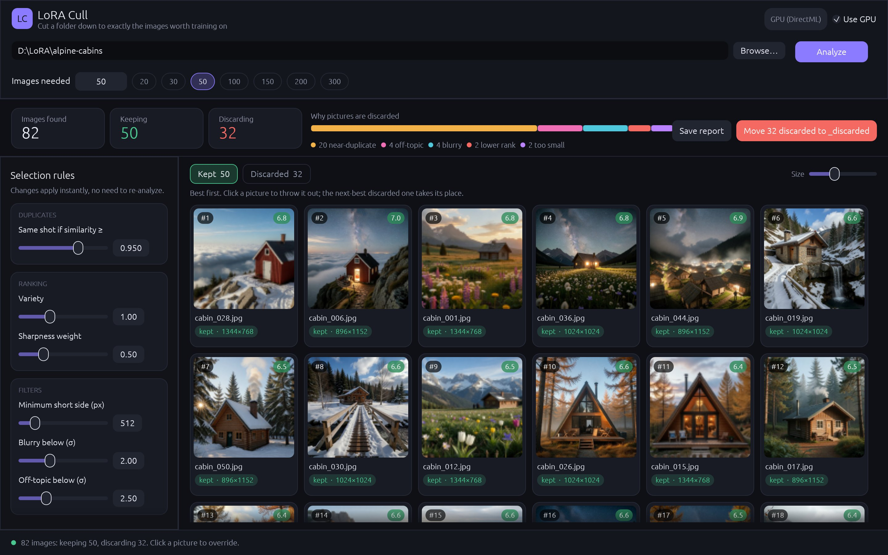
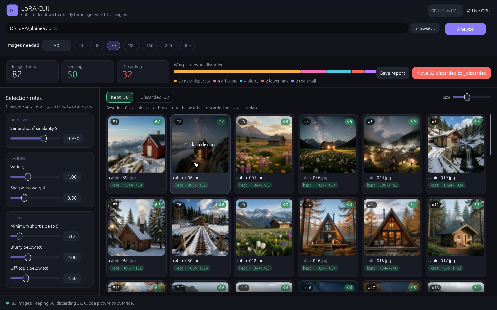
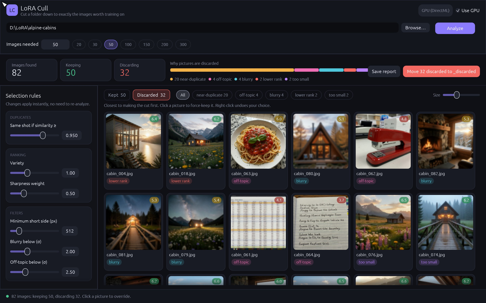

Point LoRA Cull at a folder, say how many images you need, and it uses CLIP and the LAION aesthetic predictor to throw out duplicates, blurry, tiny and off-topic pictures, keeping a varied, high-quality set.

Discards happen in a fixed order, so the cheapest wins come first: broken files and duplicates go before any picture is judged on taste.
Files that won't decode, plus anything you clicked out by hand.
Two shots that CLIP rates 95%+ alike count as one. The weaker copy goes.
Under 512 px, soft focus, or far from what the rest of the folder is about.
Lowest aesthetic score goes next, with a penalty for looking like pictures already kept.
Kept pictures are ranked best first, with their aesthetic score on the corner.

The Discarded tab sorts by "closest to making it" and filters by reason, so a near-miss is one click from coming back.

Type any count or tap a preset: 20, 30, 50, 100, 150, 200, 300. It shows how many the folder holds as you go.
ONNX Runtime with DirectML runs on NVIDIA, AMD or Intel cards and falls back to the CPU when it has to.
A move manifest records every file, so Undo restores the folder exactly as it was, even after a restart.
.txt, .caption, .json and .npz sidecars move with their image, so trainer folders stay consistent.
After a one-time model download, nothing leaves your machine. No account, no upload.
Drop a folder on the window, press Analyze, review, move. A native Rust app that opens instantly.
OpenAI's image encoder turns every picture into a 768-number fingerprint. Comparing fingerprints finds duplicates, off-topic shots and clusters of look-alikes. ONNX export by Xenova.
A small network trained on human ratings scores each picture from roughly 1 to 10. From improved-aesthetic-predictor, ONNX by haor.
Open the app, drop your folder in, set how many images you need, press Analyze. Review, then move the extras aside.